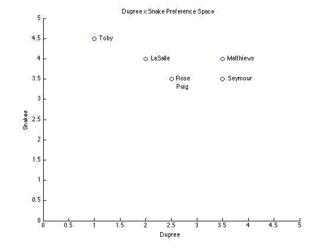
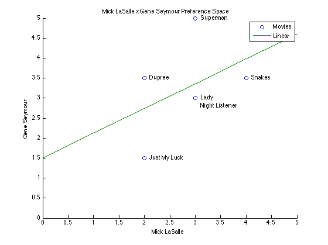
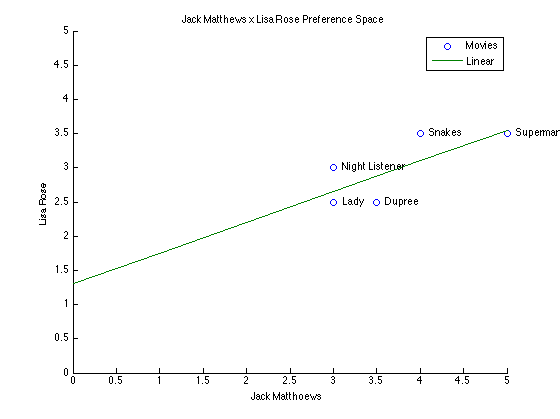
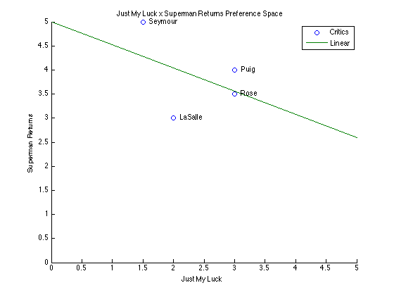

"Programming Collective Intelligence - Building Smart Web 2.0 Applications"
by Toby Segaran (O'Reilly Media, ISBN-10: 0-596-52932-5)
Have you ever wondered how Amazon came up with recommendations like "customers who bought this item also bought..."? Collective Intelligence is at the core of Web 2.0 revolution.
This book is a great introduction to data mining techniques that as applied by companies like Amazon. It actually gives functional code examples that you can play with. The book uses Python for examples, so I rewrote them in MATLAB. I didn't work on del.icio.us link recommender example, however - I could parse XML response returned by del.icio.us API using xmlread. But perhaps it is easier to use the Python code in the book to get the data in text file and import that into MATLAB.
One word of caution - the result you get with my M-files may not be identical to those in the book, though they should be fairly close. I believe this is because of the rounding errors caused by difference in degree of precision between MATLAB and Python. If this is the case, it's not a big deal for our purpose here, because we don't need precise numbers to get recommendations.
Contents
- Chapter 2: Making Recommendations
- Create the movie review dataset
- Generate "Snakes by Dupree preference space" plot
- Euclidean Distance Score (Page 11)
- Generate "Mick LaSalle x Gene Seymour preference space" plot
- Generate "Jack Matthews x Lisa Rose preference space" plot
- Pearson Correlation Score (page 13)
- Ranking the Critics (Page 15)
- Recommending Items (Page 17)
- Matching Products (page 18)
- Generate "Just My Luck vs. Superman Returns" plot
- Get Recommendations with transposed data (Page 18)
- Building the Item Comparison Dataset
- Get Recommendations
- Using the MovieLens Dataset - import data (Page 25)
- Using the MovieLens Dataset - test the dataset (Page 26)
- Using the MovieLens Dataset - get user-based recommendations (Page 26)
- Using the MovieLens Dataset - build the item-similarity dataset
- Or load prebuild dataset
- Using the MovieLens Dataset - get item-based recommendations
- User-Based or Item-Based Filtering?
Chapter 2: Making Recommendations
This chapter explains how Amazon-like recommendation engines work. The approach used here is called Collaborative Filtering.
Create the movie review dataset
Page 8: Collaborative Filtering - Collecting Preferences
Check out "prefs.xls", which contain the basic dataset we use in the following examples. It is a table of data listing movie critics, movies they reviewed, and their ratings. But the data can represent anything you want - the algorithm won't care so long as the data is formatted in a similar way. You can import data from the Excel file using the Import Wizard, but here we run this section of the code to import data into MATLAB Workspace.
newData = importdata('prefs.xls'); % For some XLS and other spreadsheet files, returned data are packed % within an extra layer of structures. Unpack them. fields = fieldnames(newData.data); newData.data = newData.data.(fields{1}); fields = fieldnames(newData.textdata); newData.textdata = newData.textdata.(fields{1}); % Create new variables in the base workspace from those fields. vars = fieldnames(newData); for i = 1:length(vars) assignin('base', vars{i}, newData.(vars{i})); end % There are 7 movie critics: % 'Lisa Rose', 'Gene Seymour', 'Michael Phillips', ... % 'Claudia Puig', 'Mick LaSalle', 'Jack Matthiews', 'Toby' critics = textdata(2:end,1); % There are 6 movies: % 'Lady in the Water', 'Snakes on a Plane', 'Just My Luck',... % 'Superman Returns', 'The Night Listener', 'You, Me and Dupree' movies = textdata(1,2:end); % Data is a matrix of ratings by those critics (row) x movies (col) % [2.5 3.5 3.0 3.5 3.0 2.5; % 3.0 3.5 1.5 5.0 3.0 3.5; % 2.5 3.0 0 3.5 4.0 0; % 0 3.5 3.0 4.0 4.5 2.5; % 3.0 4.0 2.0 3.0 3.0 2.0; % 3.0 4.0 0 5.0 3.0 3.5; % 0 4.5 0 4.0 0 1.0]; prefs = data; clear newData fields vars i data textdata; disp('Sample data has been loaded into Workspace.')
Sample data has been loaded into Workspace.
Generate "Snakes by Dupree preference space" plot
Page 10: Finding Similar Users - Euclidean Distance Score
This section of the code plots the movie critics on a graph based on their ratings for two movies - "Snakes on the Plane" and "You, Me, and Dupree". This is a way to show visually the relative positions of the people in "preference space". The graph is 2D, so we can only use two movies to position critics, but the preference space could be multi- dimensional to use data from more movies.
x = prefs(:,6);
y = prefs(:,2);
datalabels = {'Rose', 'Seymour', 'Phillips', ' ', 'LaSalle', 'Matthiews', 'Toby'};
nonzero = find(x~=0);
figure1 = figure('Name','Fig-1');
axes('Parent',figure1);
xlim([0 5]);
ylim([0 5]);
hold('all');
title('Dupree x Snake Preference Space');
scatter(x(nonzero), y(nonzero), 'DisplayName', 'Critics', 'XDataSource', 'x', 'YDataSource',...
'y'); figure(gcf)
text(x(nonzero)+0.1,y(nonzero),datalabels(nonzero));
text(x(4,1)+0.1,y(4,1)-0.2,'Puig');
xlabel('Dupree');
ylabel('Snakes');
clear x y figure1 datalabels nonzero;
 Euclidean Distance Score (Page 11)
Euclidean distance takes the relative difference between two points in multi-dimensional space and gives you how far apart they are. We can use it to decide the similarity of two people. "euclidean.xls" shows how this algorithm works in Excel.
% "Lisa Rose" = 1, "Gene Seymour" = 2 disp('What is the similarity score between Lisa Rose and Gene Seymour? - Euclidean Distance') sim_distance(prefs, 1, 2) clear ans;
What is the similarity score between Lisa Rose and Gene Seymour? - Euclidean Distance
ans =
0.2943
Generate "Mick LaSalle x Gene Seymour preference space" plot
Page 12: Finding Similar Users - Pearson Correlation Score
This section of the code plots the movie ratings of two critics Lisa Rose and Gene Seymour on a graph and shows the relative positions of rated movies between them. After generating the graph, go to "Tools --> Basic Fitting" in the resulting Figure window, select "linear" option, and close the dialog box. Now you see the best-fit line in the graph. The line and how tightly the points cluster around it indicates the relative similarity between those two critics. If their ratings are identical, the line will be diagonal. Compare to the graph generated by the next section of the code.
x = prefs(5,:);
y = prefs(2,:);
datalabels={'Lady', 'Snakes', 'Just My Luck','Superman', ' ', 'Dupree'};
x1=0:5;
y1=0.62.*x1+1.5;
figure2 = figure('Name','Fig-2');
axes1=axes('Parent',figure2);
xlim([0 5]);
ylim([0 5]);
hold('all');
title('Mick LaSalle x Gene Seymour Preference Space');
scatter(x, y, 'Parent', axes1, 'DisplayName', 'Movies', 'XDataSource', 'x', 'YDataSource',...
'y'); figure(gcf)
plot(x1, y1, 'Parent', axes1, 'DisplayName', 'Linear', 'XDataSource', 'x1', 'YDataSource', 'y2'); figure(gcf)
text(x+0.1,y,datalabels);
text(x(5)+0.1,y(5)-0.2,'Night Listener');
xlabel('Mick LaSalle');
ylabel('Gene Seymour');
legend(axes1,'show');
clear axes1 x x1 y y1 figure2 datalabels nonzero;
 Generate "Jack Matthews x Lisa Rose preference space" plot
Page 12: Finding Similar Users - Pearson Correlation Score
Here is another graph - follow the previous steps to add the best-fit line. You notice that this time the points are lined up much closer to the best-fit line. This indicates that there is high correlation between the ratings given by Lisa Rose and Jack Matthews. We can use this correlation coefficient data to determine how similar two people are. This approach is implemented in Pearson Correlation Score below.
x = prefs(6,:);
y = prefs(1,:);
datalabels={'Lady', 'Snakes', 'Just My Luck','Superman', 'Night Listener', 'Dupree'};
nonzero = find(x~=0);
x1=0:5;
y1=0.45.*x1+1.3;
figure3 = figure('Name','Fig-3');
axes1 = axes('Parent',figure3);
xlim([0 5]);
ylim([0 5]);
hold('all');
title('Jack Matthews x Lisa Rose Preference Space');
scatter(x(nonzero), y(nonzero), 'Parent', axes1, 'DisplayName', 'Movies', 'XDataSource', 'x', 'YDataSource','y'); figure(gcf)
plot(x1, y1, 'Parent', axes1, 'DisplayName', 'Linear', 'XDataSource', 'x1', 'YDataSource', 'y2'); figure(gcf)
text(x(nonzero)+0.1,y(nonzero),datalabels(nonzero));
xlabel('Jack Matthoews');
ylabel('Lisa Rose');
legend(axes1,'show');
clear axes1 x x1 y y1 figure3 datalabels nonzero;
 Pearson Correlation Score (page 13)
Pearson Correlation Score works well when you have grade inflation. In the previous graph, you see that Jack Matthews tends to give higher rating than Lisa Rose, but the line fit well because they have relatively similar preferences. "pearson.xls" shows how this algorithm works in Excel.
% "Lisa Rose" = 1, "Gene Seymour" = 2 disp('What is the similarity score between Lisa Rose and Gene Seymour? - Pearson Correlation Coefficient') sim_pearson(prefs, 1, 2) clear ans;
What is the similarity score between Lisa Rose and Gene Seymour? - Pearson Correlation Coefficient
ans =
0.3961
Ranking the Critics (Page 15)
recommend other users with similar tastes
Here we take advantage of the two similarity score metrics identified above to score similarities to a given person of all other people in the data and return a ranked result. This can be used to identify group of people with similar preferences. Perhaps great for community building, or even a matchmaking service ;-)
% "Toby" = 7 temp = topMatches(prefs, 7, 3, @sim_pearson); tempCell = cell(size(temp,1),2); for i=1:size(temp,1) tempCell{i,1}=temp(i,1); tempCell{i,2}=critics{temp(i,2),:}; end disp('Whoes tastes are similar to Toby''s?') disp(tempCell) clear i temp tempCell;
Whoes tastes are similar to Toby's?
[0.9912] 'Lisa Rose'
[0.9245] 'Mick LaSalle'
[0.8934] 'Claudia Puig'
Recommending Items (Page 17)
Similarity scores can be used to make recommendations. You can find who has similar tastes to given person and find out what other movies those people have seen that the given person has not seen. But we need to use weighted average to make the result consistent. "recommendations for Toby.xls" shows how this algorithm works in Excel.
% get user-based recommendations for Toby temp = getRecommendations(prefs,7,@sim_pearson); tempCell = cell(size(temp,1),2); for i=1:size(temp,1) tempCell{i,1}=temp(i,1); tempCell{i,2}=movies{1,temp(i,2)}; end disp('Recommend movies for Toby - user-based filtering') disp(tempCell) clear i temp tempCell;
Recommend movies for Toby - user-based filtering
[3.3478] 'The Night Listener'
[2.8325] 'Lady in the Water'
[2.5310] 'Just My Luck'
Matching Products (page 18)
Rather than recommending products based on similar people's preference, Amazon gives you recommendations based on the products you selected. So we need to modify the above algorithm to work item-centric rather than user-centric. In other words, rather than comparing people to people, we can compare item to item and find out how similar they are. We can do this by transposing the preference data without modifying the code.
% Which movie is most similar to 'Superman Returns'? temp = topMatches(prefs',4,5,@sim_pearson); tempCell = cell(size(temp,1),2); for i=1:size(temp,1) tempCell{i,1}=temp(i,1); tempCell{i,2}=movies{1,temp(i,2)}; end disp('Which movies are most similar to ''Superman Returns''?') disp(tempCell) clear i temp tempCell;
Which movies are most similar to 'Superman Returns'?
[ 0.6580] 'You, Me and Dupree'
[ 0.4880] 'Lady in the Water'
[ 0.1118] 'Snakes on a Plane'
[-0.1798] 'The Night Listener'
[-0.4229] 'Just My Luck'
Generate "Just My Luck vs. Superman Returns" plot
Page 19: Matching Products
If you run the previous section of the code, you notice that some scores are negative. Run the following code to generate a plot. You see that the line is sloped downwards on the right, indicating that Superman Returns and Just My Luck are negatively correlated - those who like one would not like the other.
x = prefs(:,3);
y = prefs(:,4);
datalabels = {'Rose', 'Seymour', 'Phillips', 'Puig', 'LaSalle', 'Matthiews', 'Toby'};
nonzero = find(x~=0);
x1=0:5;
y1=-0.48.*x1+5;
figure4 = figure('Name','Fig-4');
axes1 = axes('Parent',figure4);
xlim([0 5]);
ylim([0 5]);
hold('all');
title('Just My Luck x Superman Returns Preference Space');
scatter(x(nonzero), y(nonzero), 'Parent', axes1, 'DisplayName', 'Critics', 'XDataSource', 'x', 'YDataSource', 'y'); figure(gcf)
plot(x1, y1, 'Parent', axes1, 'DisplayName', 'Linear', 'XDataSource', 'x1', 'YDataSource', 'y2'); figure(gcf)
text(x(nonzero)+0.1,y(nonzero),datalabels(nonzero));
xlabel('Just My Luck');
ylabel('Superman Returns');
legend(axes1,'show');
clear axes1 x x1 y y1 figure4 datalabels nonzero;
 Get Recommendations with transposed data (Page 18)
Using the transposed data, you get recommendations of people for given item. This can be used to predict which other user will likely enjoy the movie. Applied to marketing cases, this can be used to identify potential buyers for a given item for marketing promotion.
% "Just My Luck" = 3; who would like this movie? temp= getRecommendations(prefs',3,@sim_pearson); tempCell = cell(size(temp,1),2); for i=1:size(temp,1) tempCell{i,1}=temp(i,1); tempCell{i,2}=critics{temp(i,2),:}; end disp('Who would probably like ''Just My Luck''?') disp(tempCell) clear i temp tempCell;
Who would probably like 'Just My Luck'?
[4] 'Michael Phillips'
[3] 'Jack Matthiews'
Building the Item Comparison Dataset
Page 23: Item-Based Filtering - Building the Item Comparison Dataset
The algorithm in getRecommendations.m uses user preference to generate recommendations. This will work in a small scale, but it will not be fast once we have a large number of users or items. Therefore, big websites like Amazon.com would not want to use this algorithm as it is. The technique we implemented so far is called "user-based collaborative filtering". More scalable technique is called "item-based collaborative filtering" and it precomputes the similarities among items, rather than users. The key advantage is comparison between items will not change as often as comparison between users, so it doesn't have to be real-time. Yet, once you have the precomputed preference data, you can use it to come up with recommendations very fast. This data has to be updated more frequently early on when you have a small user base, but less frequently as you grow your dataset.
itemsim = calculateSimilarItems(prefs,10,@sim_distance);
disp('Item-based similarity table has been created.')
Item-based similarity table has been created.
Get Recommendations
Page 25: Item-Based Filtering - Getting Recommendations
Now we can use the precomputed preference data to make recommendations. You get all items user rated, find similar items using the precomputed dataset, and weight the result according to how similar they are. "item- based recommendations for Toby.xls" shows how this algorithm works in Excel.
% recommend movies highly rated by other users with similar tastes temp=getRecommendedItems(prefs,itemsim,7); tempCell = cell(size(temp,1),2); for i=1:size(temp,1) tempCell{i,1}=temp(i,1); tempCell{i,2}=movies{1,temp(i,2)}; end disp('Recommend movies for Toby - item-based filtering'); disp(tempCell) clear i temp tempCell;
Recommend movies for Toby - item-based filtering
[3.1667] 'The Night Listener'
[2.9366] 'Just My Luck'
[2.8688] 'Lady in the Water'
Using the MovieLens Dataset - import data (Page 25)
MovieLens dataset was developed by the GroupLens project at the University of Minnesota and it can be downloaded from http://www.grouplens.org/node/12 There are two dataset and here we use the 100,000 dataset.
% load data from u.data and u.item [prefs, movies]= loadMovieLens('ml-data_0'); clear path critics itemsim; disp('MovieLens dataset has been loaded into Workspace.')
MovieLens dataset has been loaded into Workspace.
Using the MovieLens Dataset - test the dataset (Page 26)
Look at some ratings of User ID = 87
% just the first 100 items user87=prefs(87,1:100); j=0; for i=1:size(user87,2) % process if rated if user87(1,i)~=0 j=j+1; temp{j,1}=movies{1,i}; temp{j,2}=user87(1,i); end end disp('Show the first 10 movies reviewed by User [ID = 87] in MovieLens dataset.') disp(temp(1:10,:)) clear i j user87 temp ans;
Show the first 10 movies reviewed by User [ID = 87] in MovieLens dataset.
'GoldenEye (1995)' [4]
'Get Shorty (1995)' [5]
'Twelve Monkeys (1995)' [4]
'Babe (1995)' [5]
'Dead Man Walking (1995)' [4]
'Mighty Aphrodite (1995)' [3]
'Muppet Treasure Island (1996)' [3]
'Braveheart (1995)' [4]
'Birdcage, The (1996)' [4]
'Bad Boys (1995)' [4]
Using the MovieLens Dataset - get user-based recommendations (Page 26)
% get user-based recommendations for User ID = 87 temp = getRecommendations(prefs,87,@sim_pearson); tempCell = cell(size(temp,1),2); for i=1:size(temp,1) tempCell{i,1}=temp(i,1); tempCell{i,2}=movies{1,temp(i,2)}; end disp('Recommend movies for User [ID = 87] - user-based filtering') disp(tempCell(1:10,:)) clear i temp;
Recommend movies for User [ID = 87] - user-based filtering
[ 5] 'Great Day in Harlem, A (1994)'
[ 5] 'They Made Me a Criminal (1939)'
[ 5] 'Marlene Dietrich: Shadow and Light (1996) '
[ 5] 'Star Kid (1997)'
[ 5] 'Boys, Les (1997)'
[ 5] 'Saint of Fort Washington, The (1993)'
[ 5] 'Santa with Muscles (1996)'
[ 5] [1x49 char]
[4.8988] 'Legal Deceit (1997)'
[4.8150] 'Letter From Death Row, A (1998)'
Using the MovieLens Dataset - build the item-similarity dataset
This will take a while (10 minutes or so) so go take a break.
% disp('Building item-similarity dataset...'); % tStart = tic; % % itemsim=calculateSimilarItems(prefs,50,@sim_distance); % % tEnd = toc(tStart); % fprintf('%d minutes and %f seconds\n',floor(tEnd/60),rem(tEnd,60));
Or load prebuild dataset
This is instantaneous.
load ml-itemsim.mat;
Using the MovieLens Dataset - get item-based recommendations
% get item-based recommendations for User ID = 87 temp=getRecommendedItems(prefs,itemsim,87); tempCell = cell(size(temp,1),2); for i=1:size(temp,1) tempCell{i,1}=temp(i,1); tempCell{i,2}=movies{1,temp(i,2)}; end disp('Recommend movies for User [ID = 87] - item-based filtering') disp(tempCell(1:10,:)) clear i temp;
Recommend movies for User [ID = 87] - item-based filtering
[5] 'Toy Story (1995)'
[5] 'Usual Suspects, The (1995)'
[5] 'What's Eating Gilbert Grape (1993)'
[5] 'Hudsucker Proxy, The (1994)'
[5] 'Much Ado About Nothing (1993)'
[5] 'Silence of the Lambs, The (1991)'
[5] 'Rock, The (1996)'
[5] 'Phenomenon (1996)'
[5] 'Reservoir Dogs (1992)'
[5] 'Monty Python and the Holy Grail (1974)'
User-Based or Item-Based Filtering?
- Item-based filtering is faster with large dataset.
- Item-based filtering requires overhead of maintaining the item similarity table.
- Item-based filtering is more accurate when the dataset is sparse.
- User-based filtering is simpler to implement.
- User-based filtering is more appropriate with smaller in-memory datasets that changes very frequently.
- User-based filtering can show people which other users have preferences similar to their own - good for community-based services link-sharing or music recommendation sites.